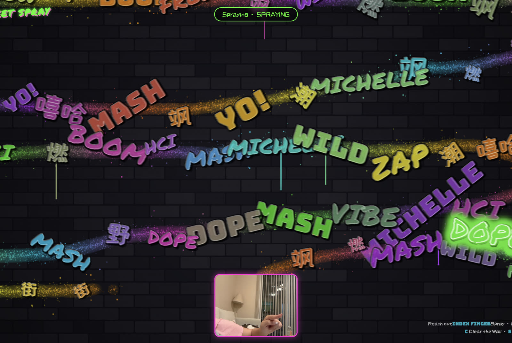
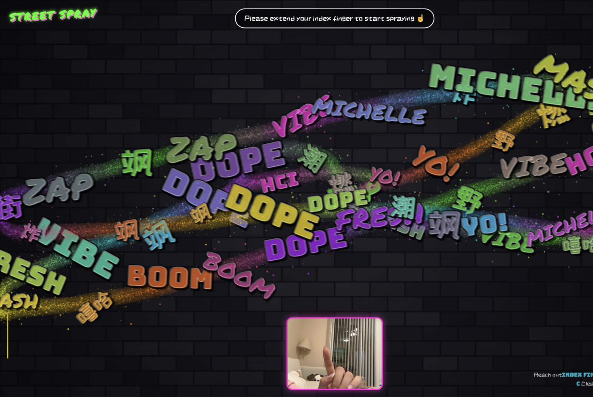
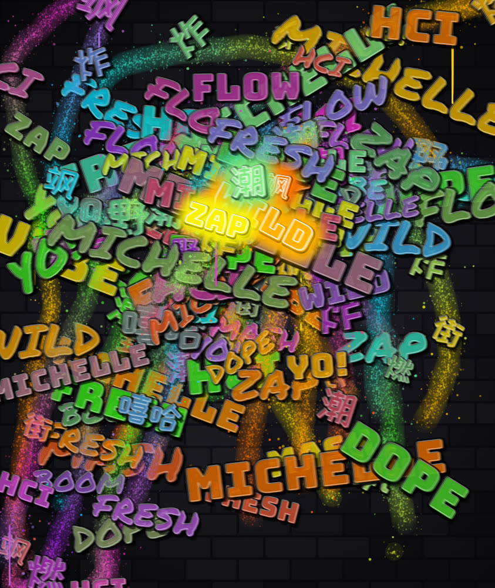
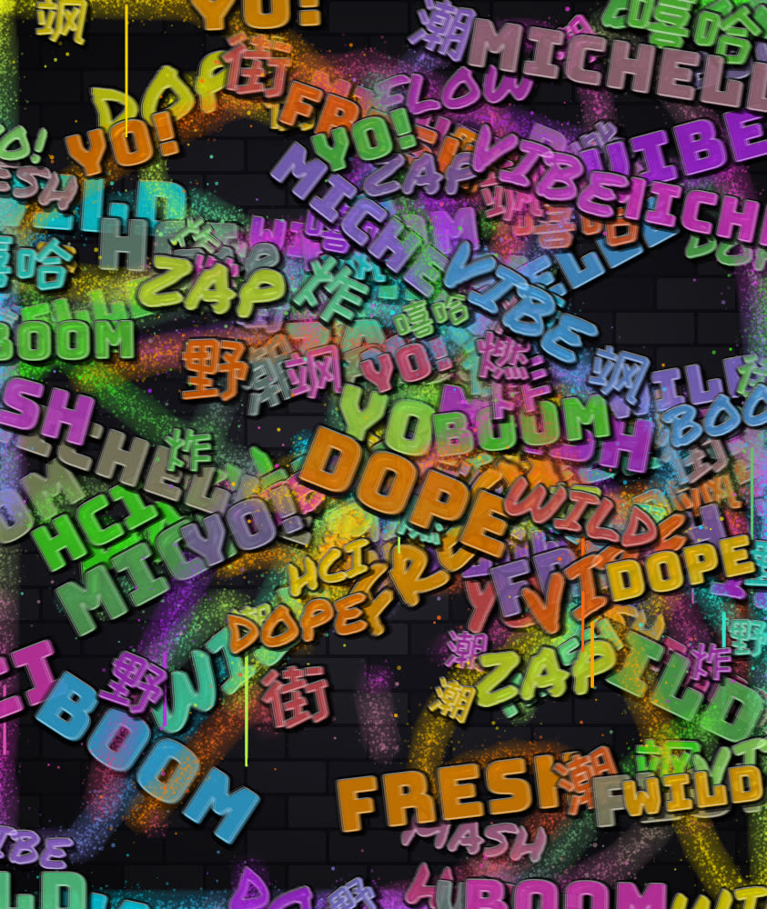
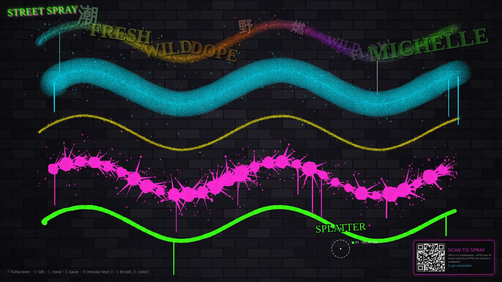
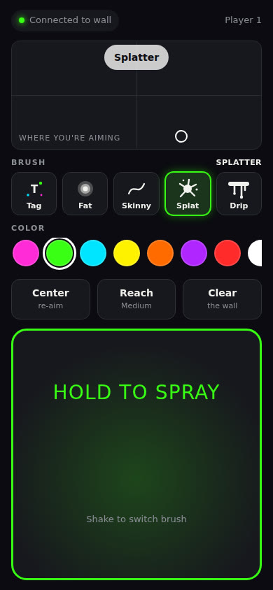

Hold up one index finger and the screen becomes a street wall you can tag in mid-air. A gesture-painting experiment built with nothing but a webcam and a browser.
Opens in a new tab and asks for your webcam. Best in Chrome, Edge or Safari on a laptop. Video is processed in your browser and never uploaded.
Street Spray is a small experiment from everyday life: no controllers, no extra hardware, just a laptop's built-in camera turning the motion of a hand in the air into spray-paint strokes on screen.
The system tracks the tip of the index finger in real time and emits paint particles with a randomized spread at that point. The color drifts through a set of neon hues as the hand travels, and every stretch of movement "sprays" out a rotated graffiti word. Each word pops in, holds, fades, and leaves a faint ghost on the wall, so the surface keeps getting denser and more layered the longer you paint.
The whole piece is a single HTML file. Every dependency loads from a CDN, so there is no build step and no server.
Street graffiti is a physical act. The swing of the arm, the distance between can and wall, the pooling and dripping of paint when you pause: the stroke is a record of the movement itself. On screen, drawing usually shrinks down to small nudges of a mouse or trackpad.
I wanted to see whether I could bring that full-body feeling back to the screen with almost no barrier to entry: nothing to wear, nothing to install, just open a page and raise a hand. It was also a small exercise in natural user interfaces, built around one question: without a button, how does someone know when they are painting and when they have stopped?
The fingertip is treated as a spray nozzle. Its position and per-frame velocity fan out to three modules (coordinate mapping, spray control and the word trigger), which all feed a single p5.js renderer. Because rendering is decoupled from input and output, the same drawing logic can later move from a webcam and browser to motion capture and an LED wall.
In the current web build, every frame passes through these five stages. Detection runs in the MediaPipe callback and rendering runs in the p5.js draw() loop; the two sides share only a single fingertip coordinate.
getUserMedia streams the webcam; the preview is flipped horizontally like a mirror.
640 × 480 inputMediaPipe Hands returns 21 hand landmarks. Landmark 8 becomes the nozzle.
landmark[8] · index tipFlip the x-axis, trim a 10% margin, and stretch to full screen so the hand never has to reach the frame edge.
margin = 0.10Exponential smoothing filters detection jitter while keeping the cursor responsive.
lerp α = 0.45Path interpolation, particles, drips and word animation, composited in layers.
wall → paint → words → cursorThe hardest problem in mid-air input is that there is no "pen up". I use hand pose to tell them apart: compare how far the fingertip and the middle knuckle each sit from the wrist. An extended index finger sprays; a fist pauses. The cursor switches between a solid colored ring and a dashed white ring, so the state is always visible.
↑ Back to the diagram// Tip clearly farther from the wrist than the knuckle → finger extended const dTip = Math.hypot(tip.x - wrist.x, tip.y - wrist.y); const dPip = Math.hypot(pip.x - wrist.x, pip.y - wrist.y); isSpraying = dTip > dPip * 1.15;
MediaPipe returns the fingertip in normalized 0–1 camera coordinates. I flip the x-axis so the wall behaves like a mirror, trim a 10% margin on every side, and stretch what remains to the full canvas, so the hand can reach the screen edges without leaving the camera frame.
The mapped point is then smoothed with an exponential filter to absorb detection jitter. When a hand first enters the frame, the cursor jumps straight to it instead of easing over, so no stray line gets dragged from where the hand last left.
↑ Back to the diagram// Mirror x, trim a 10% margin, stretch to the canvas const nx = constrain(((1 - tip.x) - m) / (1 - 2 * m), 0, 1); const ny = constrain((tip.y - m) / (1 - 2 * m), 0, 1); // Smooth jitter, stay responsive finger.x = lerp(finger.x, nx * width, 0.45); finger.y = lerp(finger.y, ny * height, 0.45);
Each burst has three layers: fine mist scattered on a Gaussian distribution (dense at the center, sparse at the edge), a few large splatters that land outside the nozzle radius, and a very faint base haze that gives the stroke body.
Faster movement widens the spray. When the hand holds still, paint keeps building up and is more likely to run down the wall as a drip. These are the physical traits of a real can, reduced to a handful of probability rules.
↑ Back to the diagram// Gaussian radius: dense core, soft falloff const rad = abs(randomGaussian(0, r * 0.38)); // 25% chance of a splatter outside the nozzle if (random() < 0.25) splatter(r * 0.9, r * 2.2); // Drips are 6× likelier when moving slowly if (random() < (speed < 3 ? 0.012 : 0.002)) addDrip();
Every 160 pixels of travel sprays out a word with a random rotation and typeface. Its 1.6-second life has three phases: the first 25% pops in on an overshoot curve, the middle holds, and the last 40% fades while scaling up slightly. When it expires it is written into the paint layer at 70/255 opacity, becoming part of the wall's texture.
The word bank mixes English slang with Chinese characters, plus a personal signature, MICHELLE, as the piece's tag.
↑ Back to the diagram// Lifecycle: pop → hold → fade if (t < 0.25) s = easeOutBack(t / 0.25); else if (t < 0.6) s = 1; else a = lerp(255, 70, k); // On expiry, stamp a ghost into the paint layer drawGraffitiText(paintLayer, ft, 1, 70, false);
Camera detection runs at a limited frame rate, so a quick swipe can put two consecutive samples a hundred pixels apart. The renderer fills the gap with a spray point every 6 pixels, keeping the line continuous. Color progress and word emission both advance with distance traveled rather than time, so the more you paint, the more the wall changes.
↑ Back to the diagramconst steps = max(1, ceil(d / 6)); for (let s = 1; s <= steps; s++) { sprayAt(lerp(a.x, b.x, s / steps), lerp(a.y, b.y, s / steps), d); } colorT += d * 0.0025; // hue drifts with distance
The canvas is a procedurally generated dark brick wall: offset bricks, randomized brightness, fine grain noise and a vignette. Against that ground, saturated neon can actually glow. Words get a heavy black outline, an offset drop shadow and a thin white highlight to suggest the thickness of wet paint.




The webcam version worked at a desk, but I wanted to paint on the big screens at school, where a camera can't see a hand from across the room. So I built the "Physical Can Sensors" step from the upgrade path: an iPhone becomes the spray can. Point it at the wall to aim, hold the pad to spray, shake it to swap the nozzle.
Several people can join at once. Each phone scans one QR code, gets a player number, and paints on the same wall with its own pen and color.
Stack: a small Node.js server relays phone data over WebSocket, and a Cloudflare quick tunnel gives phones an HTTPS link, which iOS requires before it shares motion sensors. The wall reuses the p5.js renderer from version 1.
iPhones only expose the gyroscope to pages served over HTTPS, and setting up certificates is not something you want to do minutes before a demo. The server starts a free Cloudflare quick tunnel on launch, reads the public address from its output, and the wall turns it into a QR code. Scan, tap Start, allow motion access, and you are holding a can.
The wall also polls the server for this link on its own, so the QR code appears even if the drawing code is still loading.
↑ Back to the diagram// server.js: open an HTTPS tunnel and catch its URL const proc = spawn('cloudflared', ['tunnel', '--url', `http://localhost:${PORT}`]); proc.stderr.on('data', (buf) => { const hit = String(buf).match(/https:\/\/[a-z0-9-]+\.trycloudflare\.com/); if (hit) toDisplays({ t: 'config', publicUrl: hit[0] }); }); // display.html: draw the QR for /phone const qr = qrcode(0, 'M'); qr.addData(publicUrl + '/phone'); qr.make();
A phone can't measure how far it has moved. Integrating the accelerometer twice drifts off within seconds. What it measures very well is which way it is pointing, and that is how a spray can works anyway: you aim at the wall.
Held like a TV remote, the direction of the phone's top edge reduces to yaw = −alpha and pitch = beta, with roll ignored. Tapping Center stores a reference angle, and ±28° of yaw covers the full width of the wall. The Reach button switches between 18°, 28° and 40° for small wrist moves or big arm swings. The spray pad uses pointer capture, so a thumb that slides off the pad keeps spraying until it lifts.
↑ Back to the diagram// phone.html: angles → 0..1 wall coordinates yaw = -e.alpha; pitch = e.beta; const dYaw = ((yaw - yaw0 + 540) % 360) - 180; // wrap ±180° const x = clamp(0.5 + dYaw / (2 * reach.x)); const y = clamp(0.5 - (pitch - pitch0) / (2 * reach.y)); // ~60 times a second, with pen, color and trigger state send({ t: 'p', x, y, s: spraying ? 1 : 0, b: brushIdx, c: colorHex });
Pens can be changed without looking down: a hard shake (more than 22 m/s² of linear acceleration, at most once every 0.9 s) moves to the next pen. The threshold is high on purpose, so a sweeping arm doesn't swap the nozzle mid-stroke.
Neon Tag picks its own colors, so a swatch has nothing to change there. Instead of ignoring the tap, the phone reads it as "I want this color" and switches to Fat Cap. The spray pad and the active pen icon take on the current color, so the phone always shows what will come out.
↑ Back to the diagram// Shake = next pen const mag = Math.hypot(a.x, a.y, a.z); // gravity removed if (mag > 22 && now - lastShake > 900) setBrush(brushIdx + 1); // Picking a color while on Neon Tag → hop to Fat Cap function setColor(c) { colorHex = c; root.style.setProperty('--cur', c); // pad + icons follow if (BRUSHES[brushIdx].rainbow) setBrush(1); }
The server is a switchboard. Each phone says hello and gets the next player number. Every packet after that is stamped with that id and forwarded to the wall, after a quick check that the pen is a small integer and the color is a real hex value.
The wall keeps one record per player: smoothed position, pen, color, word timer, last-seen time. If a phone goes quiet for 0.4 s its spray stops, so a locked screen never leaves a can stuck on. When a pen changes, its name pops up above that player's cursor.
↑ Back to the diagram// server.js: stamp the id, validate, forward if (m.t === 'p') { const out = { t: 'p', id: p.id, x: +m.x, y: +m.y, s: m.s ? 1 : 0 }; if (Number.isInteger(m.b) && m.b < 16) out.b = m.b; if (/^#[0-9a-f]{6}$/i.test(m.c)) out.c = m.c; toDisplays(out); } // display.html: one player record per phone const fresh = millis() - p.seen < 400; if (p.spraying && fresh) sprayAlongPath(p);
The three aerosol pens share one spray function driven by a table: radius, particle count, spread, opacity, overspray and drip rate. Fat Cap is wide and soft, with a high drip rate for wet base coats. Skinny Cap is a dense 10 px line for outlines and signatures. Neon Tag keeps the original drifting palette and graffiti words.
The other two pens work differently. Splatter drops a noise-shaped blob every 55 px, with tapered spikes and droplets thrown along the direction of travel, so faster swings fling paint further. Drip Marker draws a solid stroke that keeps sending runs down the wall. All sizes scale with screen height, so a 4K LED wall looks like the 1080p laptop.
↑ Back to the diagram// display.html: aerosol caps (1080p units, × S on bigger walls) const CAPS = { tag: { r: 26, n: 22, sigma: .38, splat: .25, drip: [.012, .002] }, fat: { r: 58, n: 50, sigma: .42, splat: .35, drip: [.020, .004] }, skinny: { r: 10, n: 14, sigma: .33, splat: .06, drip: [.004, .0008] }, }; // Splatter: spikes thrown forward when moving const a = flung && random() < 0.6 ? p.dir + randomGaussian(0, 0.45) : random(TWO_PI);

